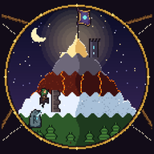

PRIVACIDAD
En corto: sin anuncios, sin analítica y sin cookies de seguimiento. Tu progreso queda en tu dispositivo. Si activas la nube, guardamos solo tu progreso, asociado a un identificador interno de tu cuenta.
EN TU DISPOSITIVO
El juego guarda tu progreso y la opción de sonido en el almacenamiento local del navegador. Esa información no sale de tu dispositivo salvo que actives la nube.
GUARDADO EN LA NUBE (OPCIONAL)
- Si eliges NUBE → Conectar con Google en el menú del juego, inicias sesión con Firebase Authentication (Google). Es la misma cuenta de la saga Cuentos del Medioevo: si ya entraste en Sendero del Orbe, aquí también.
- En Cloud Firestore guardamos un único documento con tu progreso: niveles abiertos, mejores tiempos, caídas y gemas por nivel, capa elegida, historias vistas, jefes vencidos y poderes obtenidos (corazón extra y pluma). Se identifica con el id interno de tu cuenta, no con tu nombre.
- En esa base no guardamos tu nombre, correo, foto, ubicación ni contactos.
- Firebase Authentication sí conserva el correo de tu cuenta Google para gestionar el inicio de sesión. No lo usamos para nada más ni lo compartimos.
- La opción de sonido no se sube a la nube.
- Código de progreso: se genera y se lee en tu propio dispositivo (lo copias y lo pegas tú). No pasa por ningún servidor.
SERVICIOS QUE INTERVIENEN
El sitio se sirve desde GitHub Pages (GitHub, Inc.) y la nube corre en Google Firebase (Google LLC). Como cualquier servidor, pueden registrar datos técnicos de conexión, como la dirección IP, para operar y proteger sus servicios. Los archivos del juego se cargan desde este mismo sitio.
CUÁNTO TIEMPO Y CÓMO BORRAR
- La copia en la nube se mantiene mientras no la borres.
- NUBE → Borrar datos de la nube elimina tu copia de este juego y tu cuenta en Firebase.
- Para reiniciar el progreso del dispositivo, desinstala la app o borra los datos del sitio en tu navegador.
TUS DERECHOS Y CONTACTO
Puedes pedir acceso, rectificación o eliminación de tus datos conforme a la Ley N° 19.628 sobre protección de la vida privada. Escríbenos abriendo un aviso en el repositorio del juego. No incluyas datos personales en el aviso: basta con indicar qué necesitas.
◀ Volver al juego